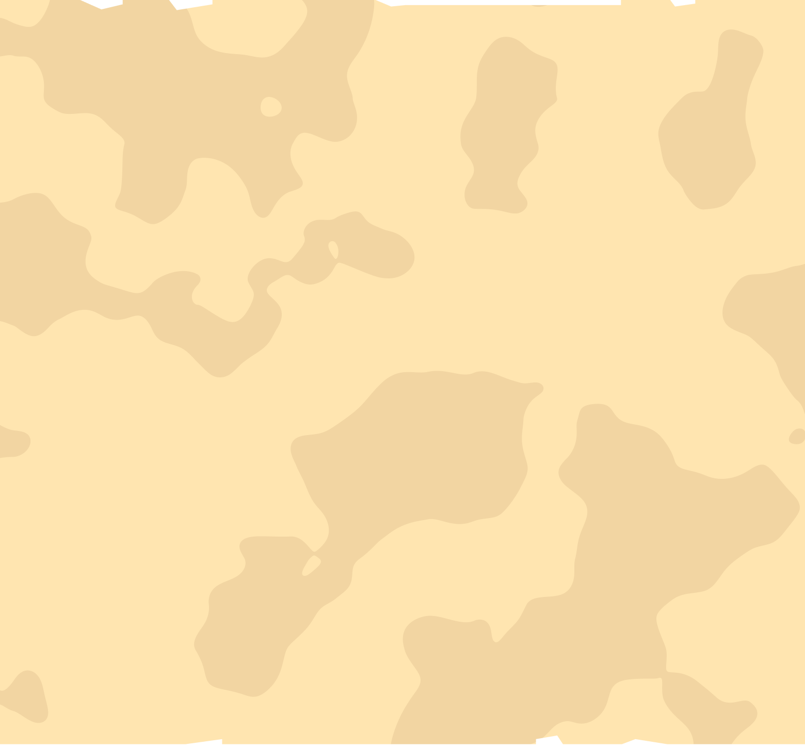

YOUR JOURNEY STARTS HERE
Di SIMETRI, peserta belajar tiga hal yang menjadi fondasi dunia web modern. HTML dan CSS sebagai bahasa dasar yang membentuk struktur dan tampilan sebuah halaman. Tailwind CSS dan Flowbite sebagai cara yang lebih efisien untuk membangun antarmuka yang rapi dan konsisten. Dan JavaScript sebagai lapisan yang membuat website menjadi hidup responsif terhadap interaksi, bergerak, dan terasa nyata. Ketiganya diajarkan secara bertahap, langsung dipraktikkan, dan pada akhirnya bersatu dalam satu karya yang sepenuhnya milik peserta.

Pengenalan & Dasar-Dasar Web Development Peserta akan mengenal SIMETRI, memahami dasar-dasar website, serta mempelajari konsep dan struktur dasar dalam pengembangan web.
Praktik & Pengembangan Website Peserta mulai menerapkan materi yang telah dipelajari melalui praktik langsung dan mengembangkan bagian awal dari website mereka.
Pengembangan & Penyempurnaan Website Peserta melanjutkan proses pengembangan website, menerapkan materi lanjutan, serta menyempurnakan tampilan dan fungsi website.
Finalisasi & Presentasi Peserta menyelesaikan website yang telah dibuat, melakukan finalisasi, dan menunjukkan hasil pembelajaran selama mengikuti rangkaian SIMETRI.